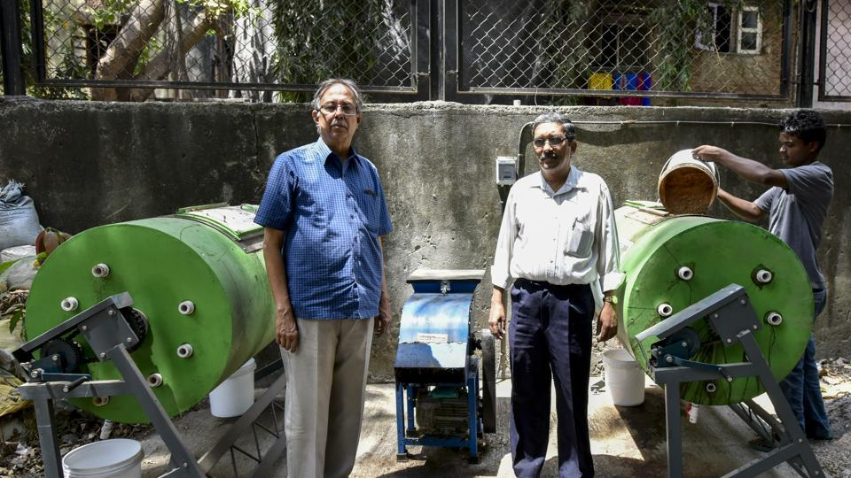

Mumbai home buyers in new buildings will get property tax bills separately

Home buyers purchasing flats in new buildings will now receive property tax bills separately.
After it was revealed that builders/developers are defaulting property tax bills, which later had to be borne by flat owners, the Brihanmumbai Municipal Corporation (BMC) will now generate property tax bills of each flat instead of the entire society.
The BMC will tax individual flats and commercial establishments, which have received the Occupation Certificate after April 1 this year. This move will help the BMC to avoid taking action against the entire housing society for non-payment or late payment of taxes. Homebuyers can also individually avail ‘early bird scheme’ and not depend on the society.
There are around 2,75,000 buildings in the city that are under the property tax ambit, through which, the BMC collects Rs5,200 crore yearly. However, in addition, the BMC also has an increasing number of property tax defaulters. In many cases it was revealed that due to few flat owners or builders, who did not pay the property tax on time, the entire society/establishment was sealed.At present, individual flat owners submit property tax bill to the society, which is then submitted to the BMC. The civic body this year sealed more than 200 properties for non-payment of property tax.
In addition to this, the BMC is also moving away from sealing entire properties and instead will only seal common amenities like swimming pools, gardens within societies, playgrounds/gardens, parking lots worth the defaulting amount. In a recent case, the BMC only sealed the parking lot of a Nepean Sea Road building to recover the property tax.
MBBS, BDS admissions in Maharashtra: Old domicile rule is back
The Supreme Court recently struck down the decision of the state Directorate of Medical Education & Research (DMER) to make all three requirements compulsory for admissions to MBBS and BDS courses for 2018-19.
In relief for medical aspirants, 85% of the seats in Maharashtra will be allotted to those who have either cleared Class 10 and 12 from Maharashtra or those who have cleared only Class 12 from the state, but have a valid domicile (proof of living in the state for 15 years) certificate.
The Supreme Court recently struck down the decision of the state Directorate of Medical Education & Research (DMER) to make all three requirements compulsory for admissions to MBBS and BDS courses for 2018-19. This means, a student will be eligible if he fits in one of the two criteria too. “Most states have strict rules for quota seats. We wanted to make sure that students from Maharashtra have an advantage over students from other states. The SC, however, rejected our decision,” said Dr Pravin Shingare, director, DMER.
Admissions to all seats will be based on the results of National Eligibility-cum-Entrance Test (NEET), which will be conducted across the country on May 6. There are close to 2,800 seats in state medical and dental institutes.
Until 2016-17, students who have either passed Class 10 and 12 from Maharashtra or those who have cleared Class 12 from the state but had a valid domicile were eligible for 85% of the state’s seats. However, last year, the DMER decided to make all three documents compulsory— Class 10, Class 12 and domicile from the state -- leaving many students who had cleared Class 10 from outside Maharashtra, but wanted to pursue medical studies in the state unhappy.
Parents of these students said many of them stayed near the state borders, and it was often more convenient to send their children to schools that were a few km away from their home in other states. Students had filed a petition opposing this new rule and the Aurangabad bench of the Bombay high court had stayed the policy.
Stating the court’s stay last year was only applicable to last year’s batch, DMER decided to re-introduce compulsion for all three documents this year. The SC, however, rejected DMER’s decision again. “Two of the three conditions need to be fulfilled by students aiming for state’s seats,” said Shingare
Mithibai, Jai Hind in Mumbai buckle up to begin their journey as autonomous colleges

The beginning of a new financial year brings in more work for city colleges, as they prepare for the new academic year. From college admissions to upgradation of facilities on campus, colleges are on their toes to complete the work before May 2 after which they shut down for the summer holidays.
But for two city colleges, the next two months will be the busiest as their work involves implementation of the recently granted autonomy by University Grants Commission (UGC).
Managements of Mithibai college, Vile Parle, and Jai Hind college, Churchgate, are busy conducting workshops for their staff and reworking details to start the new academic year as autonomous institutes.
“It’s like starting from scratch — new prospectus, new manuals, admissions rules and regulations, examinations and syllabus, among others, everything changes,” said Rajpal Hande, principal of Mithibai college.
The institute had applied for autonomy in April 2016 and received it on March 20. The autonomy will be applicable for the next 10 years.
Both the colleges have organised a series of workshops to explain their staff about the new responsibilities that come with autonomy and prepare it for the change when the new academic year begins.
Haste will make waste better: Mumbai society gets composting pit before deadline

While other societies in the city were being asked to manage their wet waste by themselves, Eucress Society in Wadala decided that before they are informed by the civic body that their waste would not be collected, they should proactively come up with a solution where their waste would be managed within the society. Around 15 days ago the society got a composting system, and the members are now learning to segregate their waste.
“We do not fall under the criteria set by Brihanmumbai Municipal Corporation (BMC), we are not bulk generators and do not have an area more than 20,000 sqm. But, we realised that our society members were not aware that waste needs to be segregated before being disposed of, which is why we installed this composting system,” said CM Lakshman, society manager.
The society has 120 flats, where around 100kg a day of wet and dry waste was produced together before the composting started. Now, around 20kg of kitchen waste is segregated daily, while the dry waste is collected by BMC.